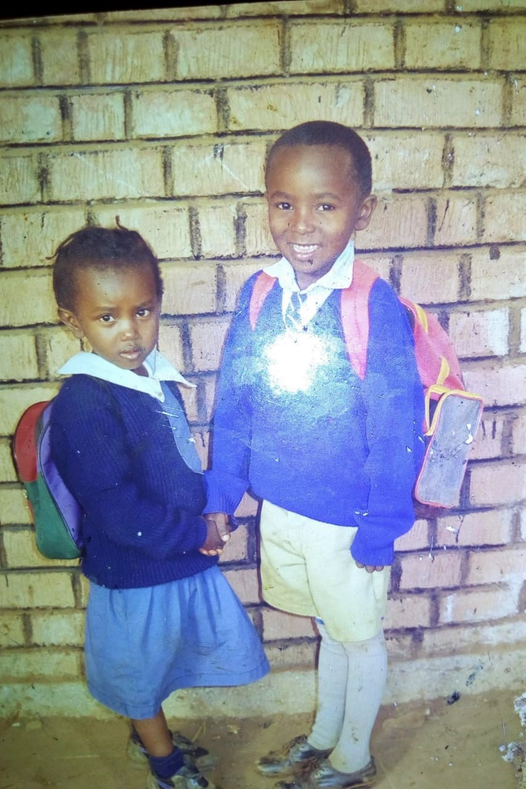

Back in the middle 90's, a special girl was born.
Fitted with the kindest of hearts, she was accustomed to caring for everyone around her.

Soon she embarked on her academic journey. There she made friends, lots of them actually.
In no time, campus was summoning her. And as they say, life outside the parent's
nest began.
In the year 2018, all the sleepless nights spent studying for CATS and the non-ending assignments paid off.
She graduated with a smile bright enough to
light up a whole city.
And with that, our shining star began serving the nation. And may God bless the work of her hands.